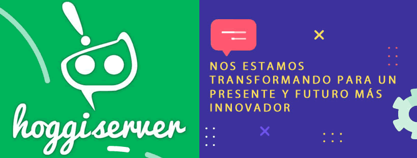

¡Impulsa tu municipio al futuro digital con Hoggiserver!
Transforma la atención ciudadana, automatiza procesos y comunica mejor con tecnología innovadora y cercana.
Servicios Profesionales
- Desarrollo de páginas web modernas y funcionales
- Estrategias de marketing digital orientadas a objetivos públicos o sociales
- Automatizaciones inteligentes para mejorar la atención ciudadana
Chatbot Ciudadano para municipios inteligentes
Ejemplo destacado: creación de un chatbot ciudadano que permite:
- Atender consultas frecuentes
- Reducir filas y tiempos de espera
- Informar en tiempo real sobre trámites y servicios municipales
Funcionalidades del Chatbot
- Disponible vía WhatsApp y sitio web
- Responde preguntas frecuentes 24/7
- Recopila información de interés ciudadano
- Cumple con normativas de protección de datos
Beneficios
- Automatización
- Ahorro de tiempo
- Transparencia
Portafolio / Ejemplos
Próximamente: proyectos realizados y prototipos.
Testimonios / Resultados
"Gracias al chatbot, la atención ciudadana es más rápida y eficiente."
"Hoggiserver nos ayudó a digitalizar nuestros servicios municipales."